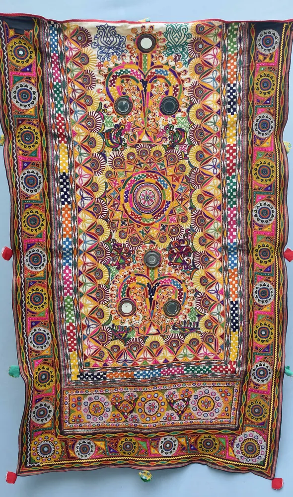

Kachchh Embroidery: A Buyer’s Guide to Community, Stitch and Provenance

Replace the single-style idea
Khamir states that Kachchh is home to more than seventeen distinct embroidery traditions and names recognised examples including Jat, Ahir, Sodha Rajput, Rabari and Soof. That diversity is the first thing a buyer should understand. Kutchi or Kachchh embroidery is not one stitch chart or one mirror-work look. Community practices use particular motifs, stitches and arrangements as forms of expression. Ask which tradition a product is connected to instead of treating every colourful embroidered textile from western India as interchangeable.
Look closely without pretending to authenticate
Study the back as well as the front where the seller permits. Notice stitch density, thread changes, joins, mirrors or other reflective elements, edge finishing and how the embroidery relates to the base cloth. These observations help you understand workmanship, but they do not prove community origin on their own. Machine embroidery can be carefully made, and handwork can be highly regular. Reliable provenance comes from a traceable maker or organisation and a clear explanation of the production chain.
Ask four provenance questions
Begin with: Who made it? Which embroidery tradition or community does the seller associate it with? Was it made as a new product, adapted from an older textile or assembled from vintage material? Who can explain the base fabric, threads and finishing? Record the answers before publishing them. If the seller cannot identify the maker, label the product only as described and avoid upgrading a broad marketing phrase into a precise heritage claim.
Understand context without freezing the craft
Khamir explains that embroidery can express individual and community identity and may communicate status in life. That cultural role should not be reduced to decoration, but neither should living artisans be expected to repeat only old forms. Contemporary products can change scale, colour, function and materials. Ask what the maker chose to preserve and what was adapted for a new market. This creates a more honest story than dividing every object into pure tradition or modern compromise.
Match care advice to the actual textile
Mirrors, metallic elements, dense stitches and contrasting dyes can require different handling. Ask for written care instructions and whether the maker recommends dry cleaning, gentle hand washing or another method for that piece. Check colourfastness guidance, storage and whether folding may stress raised elements. Do not publish universal washing advice for all Kachchh embroidery. Photograph labels and receipts so the care information stays connected to the correct product.
Compare value with like-for-like facts
Price can reflect textile size, stitch density, complexity, materials, finishing, maker payment, design development and retail support. Compare those factors rather than counting mirrors or assuming every uneven stitch lowers value. A lower-priced machine-embroidered item is not automatically wrong if it is labelled accurately. The problem is misrepresentation. Vocal for Local works best when buyers reward traceability and fair explanation instead of demanding handwork at a machine-made price.
Build a maker-centred collaboration
Before recording, agree on the artisan or collective name, correct pronunciation, permitted process shots, product credits and purchase link. If you saw only a short demonstration, say that instead of claiming to document the full making process. Ask before filming faces, homes or community dress, and disclose payment, gifts or discounts. Let the maker explain one stitch or design decision in their own words. A useful reel shows skill and agency, not an anonymous pair of hands beneath a creator’s narration.